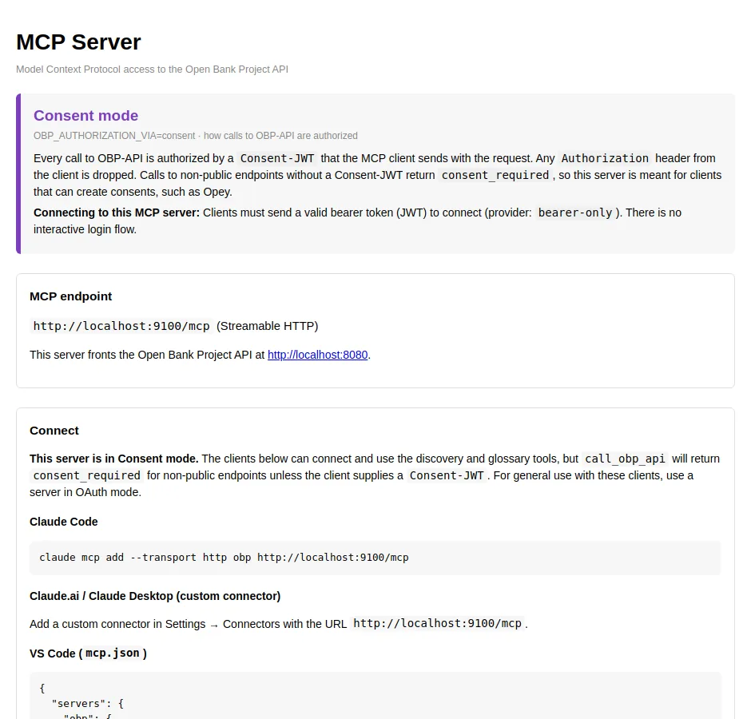

OBP-MCP
Your API, ready for AI agents.
OBP-MCP is a Model Context Protocol server that lets AI agents such as Claude find and call every OBP-API endpoint, with the user's own permissions, without loading the whole API into the model.
OBP-MCP
OBP-MCP is a Model Context Protocol server that lets AI agents such as Claude find and call every OBP-API endpoint, with the user's own permissions, without loading the whole API into the model.
The server's own page shows its address and how to connect Claude Code, Claude Desktop, VS Code and other MCP clients.

Where developers sign up, get an API key, read the guides and make their first call.
Every endpoint documented, with the Roles it needs, and callable from the page.
Where bank staff manage users, Roles, consumers and data, and watch the platform live.
Planning an open banking platform, a banking-as-a-service offer or a regulatory sandbox? Tell us what you want to build, and we will show you OBP-API and its apps working with your own banks, products and standards.